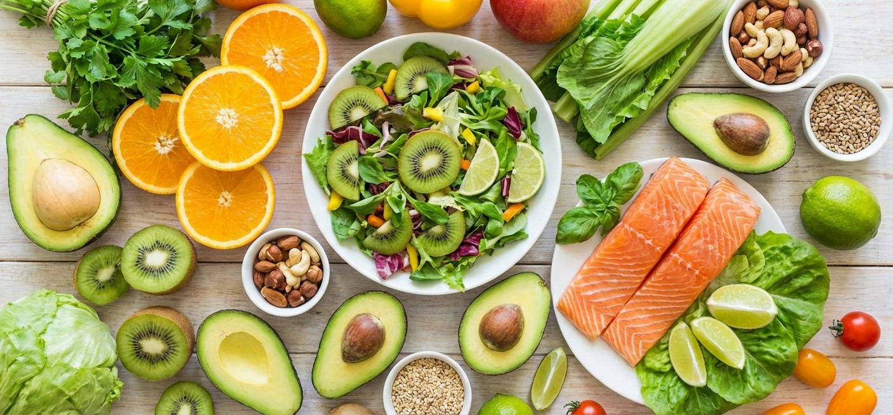

Про здоровое питание

Основные принципы здорового питания
1. Сбалансированность
Рацион должен включать все группы продуктов: белки, жиры, углеводы, витамины и минералы. Каждая группа выполняет свою важную функцию в организме. Белки необходимы для строительства тканей, жиры обеспечивают энергию и усвоение витаминов, углеводы дают быструю энергию.
2. Разнообразие
Чем разнообразнее ваш рацион, тем больше различных питательных веществ вы получаете. Старайтесь включать в меню продукты разных цветов, так как цвет часто указывает на наличие определенных витаминов и антиоксидантов.
3. Умеренность
Важно не только что вы едите, но и сколько. Даже полезные продукты в избытке могут навредить. Следите за размером порций и общим количеством калорий, соответствующим вашему образу жизни и уровню активности.
4. Регулярность
Регулярное питание помогает поддерживать стабильный уровень сахара в крови, предотвращает переедание и улучшает метаболизм. Рекомендуется есть 4-5 раз в день небольшими порциями с интервалом 3-4 часа.
Пирамида здорового питания
В основе пирамиды находятся цельнозерновые продукты, овощи и фрукты — их должно быть больше всего. На следующем уровне — белки (мясо, рыба, бобовые, орехи) и молочные продукты. На вершине пирамиды находятся жиры и сладости, которые следует употреблять в ограниченном количестве.
Важность воды
Вода играет ключевую роль в здоровом питании. Она участвует во всех обменных процессах, помогает выводить токсины и поддерживает нормальную работу всех систем организма. Рекомендуется выпивать не менее 1.5-2 литров чистой воды в день.
Обработка продуктов
Отдавайте предпочтение свежим, минимально обработанным продуктам. Избегайте продуктов с большим количеством добавок, консервантов и искусственных ингредиентов. Готовьте пищу щадящими методами: на пару, запекание, тушение вместо жарки.
Заключение
Здоровое питание — это не диета, а образ жизни. Начните с малого: добавьте больше овощей и фруктов, пейте больше воды, уменьшите количество обработанных продуктов. Постепенно эти изменения станут привычкой и приведут к улучшению здоровья и самочувствия.